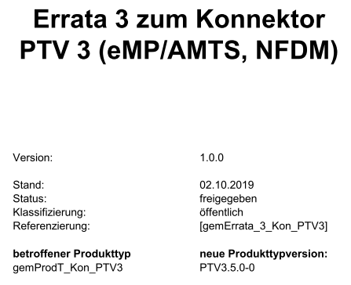

zulassungstest-relevante Abbildung von Errata 3 für Kon PTV3 > führt zu PTV3.5.0-0
Das Dokument soll die im vorliegenden Errata beschriebenen Änderungen im PET so abbilden, dass Test den funktionalen (Zulassungs-)Test des Kon PTV 3 in der Produkttypversion 3.5.0-0 vorbereiten und durchführen kann.
Im Errata - zur besseren Lesbarkeit - enthaltene unveränderte Spezifikationsanteile wurden hier nicht übernommen.
Die zum Errata veröffentlichten Dokumente sind im ELO zu finden:
Dokumentenlandkarte, in der Kon PTV3.5.0-0 eingeführt wird: elodms://3536973
snapshot vom Deckblatt des veröffentlichten Erratum:

Inhaltsverzeichnis
Das TLS-Protokoll in der Version 1.1 verwendet beim Verbindungsaufbau das schwache Hash-Verfahren SHA-1. Aus diesem Grund wird das IETF die TLS Version 1.1 abkündigen [1]. Darüber hinaus haben die namenhaften Webbrowser-Hersteller angekündigt ab 2020 TLS 1.1 nicht mehr zu unterstützen [2]. Des Weiteren schätzt die gematik ein (nach aktuellen Gesprächen mit dem BSI zu dem Thema), dass das BSI in der nächsten Aktualisierung der für die TI normativen TR-03116-1 TLS Version 1.1 für die TI verbieten wird.
Ziel der gematik ist es frühzeitig diese Entwicklung (Abkündigung von TLS 1.1) auch in der Spezifikation widerzuspiegeln.
Primärsysteme können ab dem 01.04.2020 nicht mehr davon ausgehen, dass alle Konnektoren TLS in der Version 1.1 unterstützen.
[1]: https://tools.ietf.org/html/draft-ietf-tls-oldversions-deprecate-05
[2]: https://blog.qualys.com/ssllabs/2018/11/19/grade-change-for-tls-1-0-and-tls-1-1-protocols
Von der Änderung betroffene Dokumente:
in Kapitel 3.3.2 TLS-Verbindungen:
Nach [RFC-5246, Abschnitt 7.4.1.2] muss ein TLS-Client beim Aufbau einer TLS-Verbindung (Handshake) die höchste von ihm unterstützte Version, also Version 1.2, als „favorite choice“ angeben. Mit [RFC-5246, Abschnitt 7.4.1.3] muss ein TLS-Server mit der höchsten von beiden Kommunikationspartnern unterstützten Version antworten, also nach GS-A_4385 Version 1.2. Damit wird zwischen Komponenten und Diensten, die GS-A_4385 umsetzen, nur noch die TLS-Version 1.2 verwendet.
Mittelfristig wird eine vollständige Migration auf TLS Version 1.2 angestrebt (vgl. auch [BSI-TR-02102-2, Abschnitt 3.2]), d. h. außer für den Konnektor und das KOM-LE-CM (s. u. GS-A_5530) wird die grundsätzliche Unterstützung von TLS-Version 1.1 freigestellt, und in einer späteren Migrationsphase wird diese Unterstützung (bzw. die Verwendung) untersagt.
GS-A_4386
Alle Produkttypen, die Übertragungen mittels TLS durchführen, KÖNNEN die TLS-Version 1.1 [RFC-4346] unterstützen (oder auch nicht). <=
Da alle aktuellen Webbrowser (vgl. Übersicht unter https://www.ssllabs.com/ssltest/clients.html und https://en.wikipedia.org/wiki/Comparison_of_TLS_implementations ) seit längerem TLS-Version 1.2 unterstützen ist eine Forderung der Unterstützung von TLS-Version 1.1 bei Diensten innerhalb der TI, die u. Um. von einem Primärsystem aus mittels eines Webbrowsers kontaktiert werden (bspw. VZD), nicht notwendig.
Komponenten, die direkt mit einem Primärsystem per TLS in Verbindung treten, sollen zunächst weiterhin die TLS-Version 1.1 unterstützen, um eine größtmögliche Interoperabilität zu erreichen.
GS-A_5530
Der Konnektor und das KOM-LE-CM MÜSSEN die TLS-Version 1.1 unterstützen. <=
A_18464
Alle Produkttypen, die Übertragungen mittels TLS durchführen, DÜRFEN NICHT die TLS-Version 1.1 [RFC-4346] unterstützen. <=
In Kap. 4.1.1
TIP1-A_4962
Das Primärsystem SOLL die TLS-Authentisierungsmethoden der Stufen 2 oder 4 aus Tabelle Tab_ILF_PS_Konfigurationsvarianten_HTTP und Stufe 2 aus Tabelle Tab_ILF_PS_Konfigurationsvarianten_CETP verwenden, d. h. TLS mit Server-Authentisierung mit oder ohne Client-Authentisierung.
Der Konnektor kann nur noch in den Produkttypversionen 1 und 2 die TLS-Version 1.1 anbieten. Nur mit diesen Produkttypversionen kann das PS auch TLS-Version 1.1 verwenden. Ab der Konnektor-Produkttypversion 3 bietet der Konnektor TLS nur noch gemäß TLS-Version 1.2 oder 1.3 an. Ab PTV3 MUSS das PS für TLS-gesicherte Verbindungen mindestens TLS Version 1.2 verwenden, es KANN auch TLS Version 1.3 verwenden.
<=
in Kapitel 2.4.5.1 Sicherung der administrativen TLS-Verbindung
Nach [TIP1-A_3415] sind Netzwerkverbindungen grundsätzlich mit den in [gemSpec_Krypt] genannten Verfahren zu sichern. Die Verbindung zu den Netzwerk-basierten Managementschnittstellen ist immer mit TLS 1.1 gemäß [RFC4346] zu sichern [gemSpec_Krypt#GS-A_4386]. Um die Zukunftsfä-higkeit zu gewährleisten sollen sie auch mittels TLS 1.2 gemäß [RFC5246] gesichert werden können [gemSpec_Krypt#GS-A_4385].
TIP1-A_3231-01
Das eHealth-Kartenterminal MUSS als Authentisierungsverfahren für administrative TLS-Verbindungen mindestens einseitige Authentisierung einsetzen.
<=
in Kapitel 2.4.4 Sicherheitsanforderungen LAN-gekoppelter Terminals
(…)
Für die Sicherung der hierfür notwendigen Netzwerkkommunikation sindist für alle Kartenterminals die in [gemSpec_Krypt] genannten Verfahren TLS 1.1 (Transport Layer Security) gemäß [RFC4346] [gemSpec_Krypt#GS-A_4386] als einheitliches auf Zertifikaten basierendes Verfahren vorgegeben. Um die Zukunftsfähigkeit zu gewährleisten, soll zusätzlich auch TLS 1.2 gemäß [RFC5246] unterstützt werden [gemSpec_Krypt#GS-A_4385].
(…)
Aktuell ist eine Administratoraktion (bzw. DVO-Einsatz) notwendig, um ein Firmewareupdate zu aktivieren. Dieses führt dazu, dass es viele Monate dauert, bis eine neue Firmewareversion flächenendeckend im Einsatz ist.
Gewünscht wird, eine automatische Firmewareaktualisierung aktivieren zu können
Von der Änderungbetroffene Dokumente:
in Kapitel 4.3.9
...
TIP1-A_5657
Der Konnektor MUSS die Möglichkeit bieten, dass Softwareupdates durch den Nutzer bzw. einen von ihm beauftragten Administrator einzeln freigeschaltet werden.
<=
A_18387
Der Konnektor MUSS die Möglichkeit bieten, die automatische Installation von Softwareupdates pro Gerät (Konnektor und Kartenterminals) ein- und auszuschalten. <=
TIP1-A_5659
Der Hersteller des Konnektors MUSS in seinem Handbuch den Nutzer (bzw. den von ihm beauftragten Administrator) darauf hinweisen, dass der Anwender ein Softwareupdate nur dann aktivieren soll, wenn er ausreichend Informationen über den Inhalt des Softwareupdates erhalten hat, die ihm eine bewusste Entscheidung bei der Freischaltung ermöglichen.
<=
A_18389
Der Hersteller des Konnektors MUSS in seinem Handbuch den Nutzer darauf hinweisen, dass er sich bei der Arbeit mit dem Konnektor vergewissern muss, dass er mit einer zugelassenen Version arbeitet und beschreiben, wie der Nutzer diese Information mittels seines Primärsystems erhalten kann.
<=
TIP1-A_4832
Der Konnektor MUSS den technischen Use Case TUC_KON_280 „Konnektoraktualisierung durchführen“ umsetzen.
Tabelle: TAB_KON_664 – TUC_KON_280 „Konnektoraktualisierung durchführen“
| Element |
Beschreibung |
|---|---|
| Name |
TUC_KON_280 „Konnektoraktualisierung durchführen“ |
| Beschreibung |
Dieser TUC aktualisiert den Konnektor mit einem Update, dessen Update-Dateien entweder direkt übergeben oder per UpdateInformation (vom KSRS bezogen) referenziert werden |
| Auslöser |
Der Administrator hat UpdateInformation zur Anwendung ausgewählt und bestätigt bzw. ein lokales Updatepaket bezogen und zur Anwendung übergeben. automatisches Softwareupdate [A_18387] |
| Vorbedingungen |
|
| Eingangsdaten |
|
| Komponenten |
Konnektor, Konfigurationsdienst |
| Ausgangsdaten |
Keine |
| Nachbedingungen |
Der Konnektor arbeitet basierend auf der übergebenen, im Updatepaket enthaltenen neuen Version. |
| Standardablauf |
Der Konnektor MUSS die zur Anwendung übergebene UpdateInformation wie folgt anwenden:
|
| Varianten/Alternativen |
Sofern direkt ein Updatepaket (mit enthaltenen FirmwareFiles) übergeben wurde beginnt der Ablauf ab Nummer 4 mit der Integritätsprüfung des Updatepakets |
| Fehlerfälle |
Fehler in den folgenden Schritten des Ablaufs führen zu: a) Aufruf von TUC_KON_256 { topic = „KSR/ERROR“; eventType = $ErrorType; severity = $Severity; parameters = („Target=Konnektor, Name= $MGM_KONN_HOSTNAME, Error=$Fehlercode, Bedeutung=$Fehlertext“) } b) Abbruch der Verarbeitung mit den ausgewiesenen Fehlercodes (1) Integritätsprüfung UpdateInformation fehlgeschlagen, Fehlercode: 4181 (2) Fehler bei der Downloaddurchführung, Fehlercode: 4182 (3) Integritätsprüfung eines FirmwareFiles fehlgeschlagen, Fehlercode: 4183 ( 4) Firmwaregruppenprüfung fehlgeschlagen, Fehlercode: 4185 (5b) Interne Aktualisierung fehlgeschlagen, dann: 1. Rollback auf vorherige Version 2. Abbruch mit Fehlercode: 4184 |
| Nichtfunktionale Anforderungen |
Der laufende Updatevorgang MUSS in der Managementschnittstelle ausgewiesen und der Fortschritt mindestens für die Schritte 1-5b dargestellt werden. |
| Zugehörige Diagramme |
Abbildung 21: PIC_KON_105 Aktivitätsdiagramm Konnektoraktualisierung durchführen |
Tabelle: TAB_KON_665 Fehlercodes TUC_KON_280 „Konnektoraktualisierung durchführen“
| Fehlercode |
ErrorType |
Severity |
Fehlertext |
|---|---|---|---|
| Neben den Fehlercodes der aufgerufenen technischen Use Cases können folgende weitere Fehlercodes auftreten: |
|||
| 4181 |
Security |
Error |
Integritätsprüfung UpdateInformation fehlgeschlagen. |
| 4182 |
Security |
Error |
Download nicht aller UpdateFiles möglich. |
| 4183 |
Security |
Error |
Integritätsprüfung UpdateFiles fehlgeschlagen. |
| 4184 |
Security |
Error |
Anwendung der UpdateFiles fehlgeschlagen (<Details>). |
| 4185 |
Security |
Error |
Firmware-Version liegt außerhalb der gültigen Firmware-Gruppe |
Abbildung: PIC_KON_105 Aktivitätsdiagramm Konnektoraktualisierung durchführen
TIP1-A_4833
Der Konnektor MUSS den technischen Use Case TUC_KON_281 „Kartenterminalaktualisierung anstoßen“ umsetzen.
Tabelle 1: TAB_KON_666 – TUC_KON_281 „Kartenterminalaktualisierung anstoßen“
| Element |
Beschreibung |
| Name |
TUC_KON_281 „Kartenterminalaktualisierung anstoßen“ |
| Beschreibung |
Dieser TUC fordert ein Kartenterminal auf einen Update durchzuführen, dessen Update-Dateien entweder direkt übergeben oder per UpdateInformation (vom KSRS bezogen) referenziert werden |
| Auslöser |
Der Administrator hat UpdateInformation für ein Kartenterminal zur Anwendung ausgewählt und bestätigt bzw. ein lokales Updatepaket für ein Kartenterminal bezogen und zur Anwendung übergeben. automatisches Softwareupdate [A_18387] |
| Vorbedingungen |
|
| Eingangsdaten |
|
| Komponenten |
Konnektor, Kartenterminal |
| Ausgangsdaten |
Keine |
| Nachbedingungen |
Das Kartenterminal arbeitet basierend auf der übergebenen, im Updatepaket enthaltenen neuen Version. |
| Standardablauf |
Der Konnektor MUSS die zur Anwendung übergebene UpdateInformation wie folgt anwenden:
„Beginne Kartenterminalsitzung“{role=„Admin“; ctId} b) Senden der SICCT Kommandos: SICCT CT Download INIT, SICCT CT Download DATA (Übermittlung des UpdateFiles) und SICCT CT Download FINISH an ctId c) TUC_KON_256{ topic = „KSR/UPDATE/SUCCESS”; eventType = Sec; severity = Info; parameters = („Target=KT, Name= $CT.HOSTNAME, CtID =$ctId, NewFirmwareversion = <UpdateInformation.FirmwareVersion>„} Der TUC endet in jedem Fall mit:
|
| Varianten/Alternativen |
Sofern direkt ein Updatepaket (mit enthaltenem FirmwareFile) übergeben wurde beginnt der Ablauf ab Nummer 2 mit Signalisierung des Beginns des KT-Updates |
| Fehlerfälle |
Fehler in den folgenden Schritten des Ablaufs führen zu: a) Aufruf von TUC_KON_256 { topic = „KSR/ERROR”; eventType = $ErrorType; severity = $Severity; parameters = („Target=KT, Name=$CT.HOSTNAME, CtID =$ctId, Error=$Fehlercode, Bedeutung=$Fehlertext“) } b) Abbruch der Verarbeitung mit den ausgewiesenen Fehlercodes (1) Download fehlgeschlagen, Fehlercode: 4186 (3b) SICCT-Download fehlgeschlagen, Fehlercode: 4187 |
| Nichtfunktionale Anforderungen |
Die Durchführung eines KT-Updates DARF die weitere Operation des Konnektors NICHT behindern (weder auf Schnittstellenebene noch in der Managementschnittstelle). Der laufende Updatevorgang eines KT MUSS in der Managementschnittstelle ausgewiesen und der Fortschritt dargestellt werden. Der Konnektor MUSS mindestens 5 Kartenterminal-Updates parallel durchführen können. |
| Zugehörige Diagramme |
keine |
Tabelle 2: TAB_KON_667 Fehlercodes TUC_KON_281 „Kartenterminalaktualisierung anstoßen“
| Fehlercode |
ErrorType |
Severity |
Fehlertext |
|---|---|---|---|
| Neben den Fehlercodes der aufgerufenen technischen Use Cases können folgende weitere Fehlercodes auftreten: |
|||
| 4186 |
Security |
Error |
Download nicht aller UpdateFiles möglich. |
| 4187 |
Security |
Error |
KT-Update fehlgeschlagen (<Fehlerinfo gemäß SICCT>) |
TIP1-A_5938
Der Konnektor MUSS in der Bootup-Phase TUC_KON_284 „KSR-Client initialisieren“ durchlaufen.
Tabelle 3: TAB_KON_864 – TUC_KON_284 „KSR-Client initialisieren“
| Element |
Beschreibung |
| Name |
TUC_KON_284 ”KSR-Client initialisieren” |
| Beschreibung |
Der Konnektor muss während des Bootups die Downloadpunkte für Konfigurationsdaten und Firmware ermitteln. |
| Eingangsanforderung |
Keine |
| Auslöser und Vorbedingungen |
Bootup Verbindung zum VPN-Konzentrator TI muss aufgebaut sein |
| Eingangsdaten |
Keine |
| Komponenten |
Konnektor |
| Ausgangsdaten |
|
| Standardablauf |
- Falls MGM_LU_ONLINE=Enabled: - Durch DNS-Anfragen an den DNS-Forwarder zur Auflösung der SRV-RR und TXT-RR mit den Bezeichnern „_ksrkonfig._tcp.ksr.<TOP_LEVEL_DOMAIN_TI>„ und „_ksrfirmware._tcp.ksr.<TOP_LEVEL_DOMAIN_TI>„ erhält der Konnektor URLs der Downloadpunkte des KSR für Konfigurationsdaten (MGM_KSR_KONFIG_URL) und für Firmware (MGM_KSR_FIRMWARE_URL). |
| Varianten/Alternativen |
Keine |
| Fehlerfälle |
Keine |
| Nichtfunktionale Anforderungen |
Keine |
| Zugehörige Diagramme |
Keine |
Tabelle 4: TAB_KON_822 Fehlercodes TUC_KON_284 „KSR-Client initialisieren“
| Fehlercode |
ErrorType |
Severity |
Fehlertext |
|---|---|---|---|
| Neben den Fehlercodes der aufgerufenen technischen Use Cases können keine weiteren Fehlercodes auftreten. |
|||
TIP1-A_4835
Der Administrator MUSS die in TAB_KON_670 aufgelisteten Parameter über die Managementschnittstelle konfigurieren und die in TAB_KON_820 aufgelisteten Parameter ausschließlich einsehen können.
Tabelle : TAB_KON_670 Konfigurationsparameter der Software-Aktualisierung
| ReferenzID |
Belegung |
Bedeutung und Administrator-Interaktion |
|---|---|---|
| MGM_KSR_ AUTODOWNLOAD |
Enabled/ Disabled |
Der Administrator MUSS den automatischen Download verfügbarer Update-Pakete über den Konfigurationsparameter MGM_KSR_AUTODOWNLOAD an- und abschalten können. Default-Wert: Enabled |
| MGM_KSR_SHOW_ TRIAL_UPDATES |
Enabled / Disabled |
Der Administrator MUSS einschalten können, dass zusätzlich zur Anzeige von Update-Paketen für den Online-Produktivbetrieb auch die Anzeige von Erprobungs-Update-Paketen erfolgt. Wenn MGM_KSR_SHOW_TRIAL_UPDATES von Disabled auf Enabled gesetzt wird, muss ein Warnhinweis angezeigt werden, dass die Installation von Erprobungs-Update-Paketen nur für Teilnehmer der Erprobungen vorgesehen ist. Default-Wert: Disabled |
| MGM_KSR_AUTO_UPDATE | Enabled / Disabled | Der Administrator MUSS pro Gerät (Konnektor und Kartenterminals) das automatische Softwareupdate ein- und ausschalten können. Default-Wert: Enabled Falls MGM_KSR_AUTO_UPDATE=Enabled wird MGM_KSR_ AUTODOWNLOAD=Enabled gesetzt. |
| MGM_KSR_AUTO_ UPDATE_TIME |
Wochentag / Uhrzeit Oder täglich / Uhrzeit |
Der Administrator MUSS den Wochentag und die Uhrzeit einstellen können, wann automatische Softwareupdates durchgeführt werden. Als Wochentag MUSS es neben den einzelnen Wochentagen auch einen Wert für eine tägliche Prüfung auf Aktualität und gegebenenfalls Durchführung von Softwareupdates geben. Default-Wert: Montag / 1:00 Uhr |
Tabelle: TAB_KON_820 Einsehbare Konfigurationsparameter der Software-Aktualisierung
| ReferenzID |
Belegung |
Bedeutung und Administrator-Interaktion |
|---|---|---|
| MGM_KSR_ KONFIG_URL |
URL |
SOAP-Endpunkt des Konfigurationsdienstes zum Download von Konfigurationsdaten |
| MGM_KSR_ FIRMWARE_URL |
URL |
SOAP-Endpunkt des Konfigurationsdienstes zum Download der Firmware |
TIP1-A_4839
Der Administrator MUSS in der Übersichtsliste einzelne Geräteeinträge bzw. Gruppen mit der jeweils anzuwendenden UpdateInformation für die Durchführung eines Updates markieren können.
Alternativ MUSS der Administrator neben der Markierung je Geräteeintrag bzw. Gruppe Update-Pakete lokal einspielen können (etwa durch ein Upload- bzw. Download-Interface in der Administrationsoberfläche).
Je Geräteeintrag MUSS der Administrator einen individuellen Ausführungszeitpunkt für die Durchführung des Updates einstellen können.
Der Administrator MUSS für den Geräteeintrag Konnektor festlegen können, ob dieses Update erst gestartet werden darf, wenn zuvor alle festgelegten KT-Updates erfolgreich durchlaufen wurden.
Der Administrator MUSS zu jeder Zeit die gerätebezogene Festlegung für ein Update ändern bzw. löschen können, sofern dieses konkrete Update noch nicht begonnen wurde.
Je Geräteeintrag MUSS der Administrator automatische Softwareupdates aktivieren und deaktivieren können.
<=
TIP1-A_4840
Der Administrator MUSS für die Liste der markierten Geräteeinträge ein gesammeltes Update auslösen können. Dieses MUSS nach folgendem Muster ablaufen:
A_18390
Wenn für mindestens ein Gerät das automatische Softwareupdate aktiviert ist, MUSS der Konnektor zur MGM_KSR_AUTO_UPDATE_TIME die Updates nach folgendem Muster durchführen:
A_18391
Sofern der Konnektor zu MGM_KSR_AUTO_UPDATE_TIME nicht in Betrieb war, DÜRFEN die automatischen Updates später NICHT nachgeholt werden. <=
in Kapitel 4.1.2
A_18468
Das PS MUSS an geeigneter Stelle dem Nutzer die Firmwareversion des Konnektors anzeigen, der an das PS angebunden ist. Die Konnektorversion wird über den Dienstverzeichnisdienst ausgelesen. Zur Anzeige kommen dabei die DVD-Informationen ProductVendorName, ProductName und ProductVersion/Local/FWVersion. <=
Der Basisdienst TBAuth des Konnektors wird als optional gekennzeichnet.
Es wird eine neue Anforderung definiert, die den Basisdienst TBAuth als optional definiert.
Von der Änderung betroffene Dokumente:
in Kapitel 2.1
Der Anwendungskonnektor bietet zusätzlich zu den in Kap. 4.1 beschriebenen Basisdiensten den optionalen Dienst „tokenbasierte Authentisierung“, der in [gemSpec_Kon_TBAuth] beschrieben ist.
dazu: PIC_KON_117:
Der Basisdienst Tokenbasierte Authentisierung wird als optional gekennzeichnet.
in Kapitel 3:
A_18605
Der Konnektor SOLL den Basisdienst TBAuth [gemSpec_Kon_TBAuth] unterstützen. <=
in Kapitel 4.4.5.2
<PTV3> Tokenbasierte Authentisierung
Die Bereitstellung des Basisdienstes Tokenbasierte Authentisierung ist für die Hersteller des Konnektors optional, d.h. ob der Dienst TBAuth vom Konnektor angeboten wird ist herstellerabhängig.
Auf die verpflichtende Umsetzung des Remote-Management wird verzichtet. Das Remote-Management wird als optional spezifiziert.
TIP1-A_7276 wird in eine KANN-Anforderung geändert. Alle anderen Anforderungen, die das Remote-Management (z.B. auch Remote-Administrator) betreffen, bleiben unverändert und gelten verbindlich für den Fall, dass der Konnektor das Remote-Management technisch unterstützt.
Von der Änderung betroffene Dokumente:
in Kapitel 4.3.8 Remote Management
TIP1-A_7276
Der Konnektor KANN Remote Management technisch unterstützen.
Falls der Konnektor das Remote Management technisch unterstützt, MUSS der Konnektor alle Anforderungen, die das Remote Management (z.B. auch Remote-Administrator) betreffen, umsetzen.
Andernfalls sind die Anforderungen, die das Remote Management (z.B. auch Remote-Administrator) betreffen, für den Konnektor nicht relevant. <=
Als KANN-Anforderung wird TLS in der Version 1.3 für alle Produkttypen der TI zugelassen.
Von der Änderung betroffene Dokumente:
in Kap. 3.3.2
A_18467
Alle Produkttypen, die Übertragungen mittels TLS durchführen, KÖNNEN die TLS-Version 1.3 [RFC-8446] unterstützen, falls sie
A_17322
Alle Produkttypen, die Übertragungen mittels TLS durchführen, MÜSSEN sicherstellen, dass sie nur (durch andere Anforderungen) zugelassene TLS-Ciphersuiten bzw. TLS-Versionen anbieten bzw. verwenden.
<=
Das Schema AMTS_Document_v1_5.xsd hat in dem Attribut "v" einen festen Verweis auf die aktuell verwendete BMP-Version. Bei jeder Änderung des BMP muss zurzeit auch das AMTS-Schema angepasst werden. Eine einfache Schemaanpassung ist zurzeit nicht möglich, daher soll diese feste Verknüpfung aufgelöst werden. Das Primärsystem soll die BMP-Version in den AMTS-Datensatz schreiben. Zurzeit besteht bereits eine Abweichung, da sich der BMP in der Version 2.6 befindet, aber in dem AMTS_Document_v1_5.xsd die Version fest auf 2.5 verblieben ist.
Von der Änderung betroffene Dokumente:
In Kapitel 2.1:
Tab_AMTS_Info_001 XML-Dokumente zum Info-Modell der Fachanwendung eMP/AMTS-Datenmanagement
| Version |
XML-Artefakte des Info-Modells |
|
| 1.46.0 |
Einwilligung |
|
| XSD-Name |
AMTS_Einwilligung_Document_v1_0.xsd |
|
| XSD-Version |
1.0.1 |
|
| TargetNamespace |
http://ws.gematik.de/fa/amtss/AMTS_Einwilligung_Document/v1.0 |
|
| eMP/AMTS-Daten |
||
| XSD-Name |
AMTS_Document_v1_46.xsd |
|
| XSD-Version |
1.46.0 |
|
| TargetNamespace |
http://ws.gematik.de/fa/amtss/AMTS_Document/v1.46 |
|
In Kapitel 2.3:
attribute MP/@v
| type |
restriction of xs:string |
|||||||||
| properties |
|
|||||||||
| facets |
|
|||||||||
| annotation |
|
attribute MP/@iv
| type |
restriction of xs:string |
|||||||||
| properties |
|
|||||||||
| facets |
|
|||||||||
| annotation |
|
attribute MP/S/M/@ps
| type |
restriction of xs:string |
|||||||||
| properties |
|
|||||||||
| facets |
|
|||||||||
| annotation |
|
Xsd.-Dokument in Version AMTS_Document_v1_6.xsd umbenennen.
>> hier kommt eine Reihe von Änderungen an der Schemadatei; nachzuschauen im Errata selbst unter: elodms://3645343
AMTS-A_2282
Das Primärsystem MUSS gewährleisten, dass verschiedene Versionen des BMP im eMP verarbeitet werden können. Im eMP MUSS das Primärsystem die BMP-Version als Versionsnummer des zugrunde liegenden BMP dokumentieren (attribute name="v"). <=